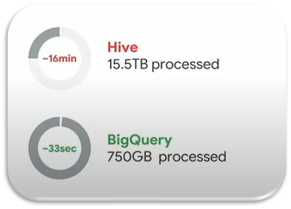
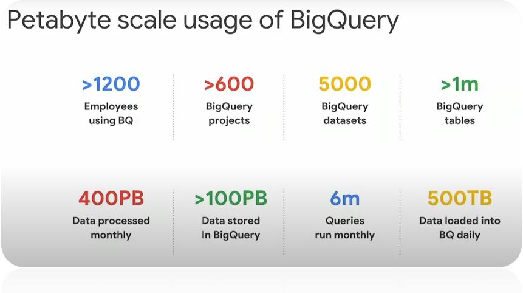

The Challenge
Spotify, a music streaming giant launched in 2008, needed to keep up with massive growth. Requires fast product development, deep customer understanding, and powerful tools for recommendation and music discovery.

The Migration (2016)
Spotify collaborated with Google Cloud to migrate a large portion of its services and data processing operations. This massive migration involved moving over:

Why Google Cloud?
Leadership Perspective
“Google Cloud removes a lot of the operational complexity from our ecosystem. That frees up time. We can iterate quicker on key needs, like data insights and machine learning.”

VP, Technology & Platform, Spotify
The Power of BigQuery
Spotify chose BigQuery for data analysis alongside Pub/Sub for messaging and Dataflow for processing.
- Reduced common query times from minutes to seconds.
- Building a Petabyte-scale data warehouse.
Visualizing Scale
From Apache Hive to BigQuery
Before Google Cloud, Spotify used Apache Hive. The difference in performance was staggering, enabling real-time insights that were previously impossible.
Petabyte Scale
One Petabyte = 1,000 Terabytes. Equivalent to 20 million tall filing cabinets of text.
